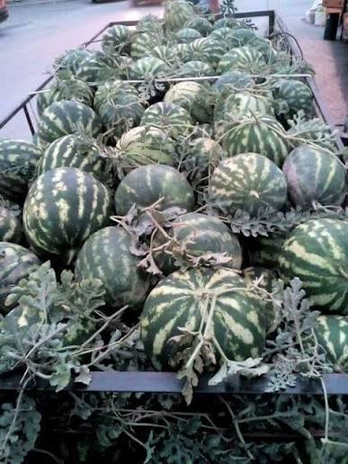

Следење на сензорите во домот.
Температура: 22 °C
Статус: Вклучен
Батерија:
Влажност:
Статус: вклучен
Батерија: 65%
Движење: Детектирано
Статус: Вклучен
Батерија: 90%
Температура: 21 °C
Статус: Вклучен
Батерија: 90%
Ниво на светлина:
Статус: Вклучен
Батерија: 75%
Ниво на бучава: 30 dB
Статус: Вклучен
Батерија:
Детекција на чад: Нема чад
Статус: Вклучен
Батерија: 85%
Ниво на гас:
Статус: вклучен
Батерија: 70%
Температура: 23 °C
Статус: Вклучен
Батерија:
Влажност: 25%
Статус: Вклучен
Батерија: 80%
Дожд: Детектиран
Статус: Вклучен
Батерија: 65%
Ниво на вода:
Статус: Вклучен
Батерија:
Температурата е над дозволената граница.
Батеријата е на 15%, потребно е полнење.
Влажноста на почвата е ниска. Потребно е наводнување.